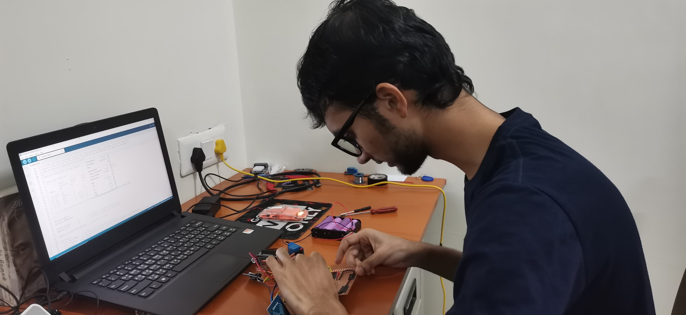

Hi, myself SANTHOSH KUMAR
I'm an independent creative developer from Theni, India.
View My Resume

I'm an independent creative developer from Theni, India.
Hello, I'm a passionate and driven individual who has earned a Master's degree in Computer Applications at CHRIST (Deemed to be University) Bangalore. My journey in the world of technology has led me to become proficient in cutting-edge fields like IoT, AIML, AR/VR, Mobile Application Development, Software Development, Web Development and Game Development. I am a diehard fan of two iconic personalities who have deeply inspired my journey—Dr APJ Abdul Kalam, a visionary leader, and Lt. Col. MS Dhoni, a true symbol of leadership and discipline. With a passion for creative coding, critical thinking and problem-solving, I thrive on finding innovative, efficient solutions to complex challenges. My ability to break down problems into simpler, actionable steps is one of my core strengths. As a team leader, I am driven by ethics, discipline, and a strong sense of responsibility. I lead by example, accepts the failure from the front and enjoys the success from the back. I don't celebrate success for myself; instead, I take pride in watching my teammates celebrate their achievements, knowing that our collective effort has brought us to that moment. Some of the key qualities that define me include punctuality, discipline, honesty, loyalty, patriotism, kindness, humility, generosity, and the ability to remain cool and calm under pressure. I firmly believe that learning is a continuous process, and it brings me immense joy to explore new technologies and ideas. Sharing this knowledge with others is something I hold dear, as I love to help my friends grow and develop along with me. I constantly nourish my mind by learning new things, keeping it sharp and ready to tackle any challenges that come my way. Above all, my greatest motivation comes from making my parents, loved ones, friends, professors, society, and country proud of what I achieve. I have a deep love for nature and believe in striking the perfect balance between environment and technology. This connection to nature keeps me grounded while I work towards creating a future where both can thrive. Thank you for visiting my portfolio. Let's connect and explore new opportunities to innovate, learn, and grow together 😊
Research Articles are under review in Reputed journals, will be published soon. To protect my intellectual properties, articles are temporarily unavailable to showcase.